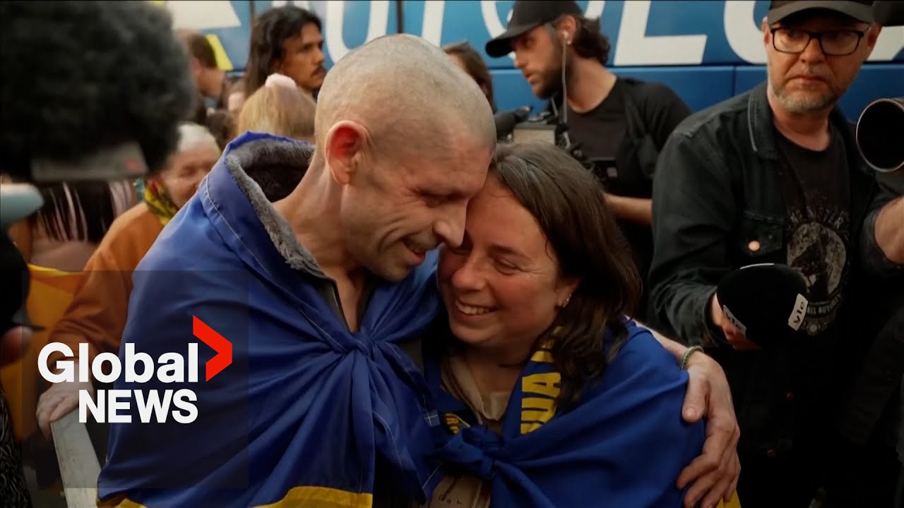

【俄罗斯和乌克兰各释放390名囚犯，标志着战争以来最大规模的交换】
Summary: The first stage of a major prisoner swap between Russia and Ukraine has begun, with 390 people returned from Russian captivity, including 270 military personnel and 120 civilians from each side, as part of a larger agreement to exchange 1000 prisoners.
摘要： 俄罗斯和乌克兰之间大规模囚犯交换的第一阶段已经开始，作为交换1000名囚犯的更大协议的一部分，390人从俄罗斯 captivity 获释，双方各释放270名军事人员和120名平民。

⏱️ Estimated Reading Time: 2 min
The first stage of a major prisoner swap between Russia and Ukraine is now underway.
俄罗斯和乌克兰之间大规模囚犯交换的第一阶段正在进行中。
Ukrainian President Vladimir Zelensky says 390 people have been returned from Russian captivity.
乌克兰总统弗拉基米尔·泽连斯基表示，390人已从俄罗斯 captivity 获释。
Russia's defense ministry says each side has released 270 military personnel and 120 civilian detainees.
俄罗斯国防部表示，双方各释放了270名军事人员和120名平民 detainees。
Moscow and Kev agreed to exchange 1000 prisoners from each side last week during the first direct.
莫斯科和基辅上周在首次直接会谈中同意双方各交换1000名囚犯。
Today, the main thing was an exchange.
今天的主要事项是交换。
And this is the first stage of the largest exchange agreed upon in Turkey.
这是土耳其所同意的最大规模交换的第一阶段。
In fact, the only significant result of the meeting in Turkey.
事实上，这是土耳其会议的唯一重要成果。
The Russians block everything else.
俄罗斯人阻止了其他一切。
They are currently blocked.
他们目前被阻止了。
The return of our people.
我们的人民的回归。
This is exactly what we always work for.
这正是我们一直努力的目标。
We will definitely bring everyone back.
我们一定会把所有人都带回来。
Every one of our citizens, every Ukrainian military and civilian, all Ukrainian hostages held in Russia, we must free them all.
我们的每一位公民，每一位乌克兰军人和平民，所有被俄罗斯扣押的乌克兰人质，我们都必须释放他们。
Every day you have to believe in military life.
每天你都必须相信军旅生活。
What did they miss the most?
他们最想念什么？
What did you remember?
你记得什么？
What did you remember?
你记得什么？
I have someone to remember.
我有要记住的人。
The family gave strength.
家人给了力量。
You have plans to go home first, maybe go somewhere or eat some tacos.
你计划先回家，也许去某个地方或吃些 tacos。
Oh, what to eat?
哦，吃什么？
we are actively working on the second part of the agreements, which provide for the preparation of each side of the draft document outlining the conditions for achieving a stable, long-term, comprehensive settlement agreement.
我们正在积极推动协议的第二部分，该部分规定双方准备一份草案文件，概述实现稳定、长期、全面 settlement 协议的条件。
And now, as soon as the exchange of prisoners of war is completed, by this time we will be ready to hand over to the Ukrainian side a draft of such a document, which the Russian side has now completed.
现在，一旦战俘交换完成，届时我们将准备好向乌克兰方面移交这样一份文件，俄罗斯方面现已完成。